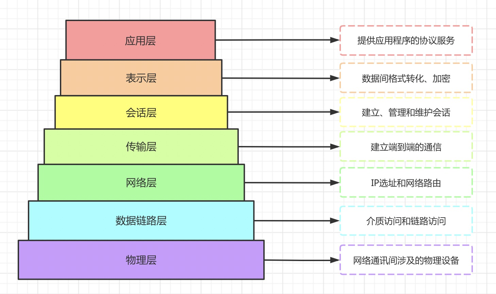

OSI网络模型
/ / 点击 /
OSI（Open System Interconnection）全称开放系统互联，它把网络通信的工作分为7层，包括应用层、表现层、会话层、传输层、网络层、数据链路层和物理层。传输层、网络层、数据链路层和物理层叫做低四层，这四层和数据的移动相关。应用层、表现层和会话层叫做高三层，包含了应用程序级别的数据，每一层负责具体的一项工作将数据想向下一层传送。
- 应用层
应用层就是为了满足应用进程间的通信和交互任务。该层的协议有HTTP、HTTPS、FTP、POP3、SMTP等
- 表现层
表现层提供数据的编码和转换功能。数据的压缩和解压缩，加密和解密等工作都是在表现层完成。
- 会话层
会话层提供访问验证和会话管理在内的建立和维护应用间通信的机制，例如服务器验证用户登陆便由会话层完成。
- 传输层
传输层主要负责建立端到端的链接，传输层的作用是为上层协议提供端到端的可靠和透明的数据传输服务。端口号即是这里的端，TCP和UDP就是这层的协议
- 网络层
网络层的任务是选择合适的网间路由和交换结点，确保数据及时传送。
- 数据链路层
将比特组合成字节,再将字节组合成帧,使用链路层地址 (以太网使用MAC地址)来访问介质,并进行差错检测（也就是帧编码和误差纠错的功能）。数据链路层协议又分为两个子层：逻辑链路控制（LLC）和媒体访问控制（MAC）。
- 物理层
信号的最终传输是通过物理层实现的。通过物理介质传输比特流。规定了电平、速度和电缆针脚。常用设备有（各种物理设备）集线器、中继器、调制解调器、网线、双绞线、同轴电缆。这些都是物理层的传输介质。
全文完。